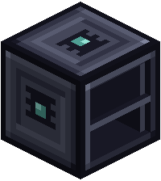

Co-op play

Friends can share one network. Everyone keeps their own Deck and their own wafers, while the network shares its machines, recipes and chests.
Who owns what
- A network belongs to the player who set it up.
- A machine or cable placed onto it joins it and belongs to the network's owner, whoever placed it.
- Two players' networks never join. A cable placed between them stays on its own.
Trusting friends
- Open an Encoding Terminal on your network.
- Open its Access window and type a friend's name. They don't have to be online.
- Stop trusting takes them off the list again.
Only the owner can trust players, up to 32 per terminal. Trusted players can open and use every JASM machine and Archive on that network. Everyone else is turned away, even if they join a cable to it.
Pairing your own Deck
Each trusted player pairs their own Deck at the terminal, in the Deck Link window. It is one Deck per player: pairing another replaces your old one. A paired Deck gets the Network tab, autocrafting, ports and Deck to Deck.
What you share and what you keep
| Shared by everyone | Your own |
|---|---|
| Recipe Cards, Recipe Racks and Crafting Servers | the wafers in your Deck |
| chests and tanks behind Storage Ports | your Deck's charge |
| the machine limit and the power | your inbox |
Crafting together
A craft started from your Deck takes its ingredients from your own wafers, and the result comes back to you. The recipes, racks, servers and processors belong to the network, so everyone crafts with the same setup. See autocrafting.
Ports
Item Ports and full Access Ports work with the owner's Deck at first. A trusted player can put their own paired Deck in the port's Deck Link window, and the port works with that Deck instead.
Archives
On a network, an Archive backs up the owner's Deck. The owner can link a trusted player's paired Deck instead. Only that player can then back up and recover; the other trusted players can look. Picking another player clears the backups. See backups and recovery.
Sending items
Deck to Deck sends items to any online player whose Deck is paired on the same network. See sending items to players.
Good to know
- The Network tab shows the same machines to everyone who is trusted.
- JASM doesn't stop other players breaking your blocks. On a public server, use a land claim mod for that.